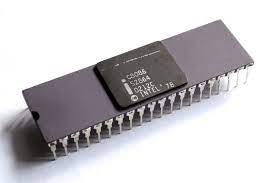
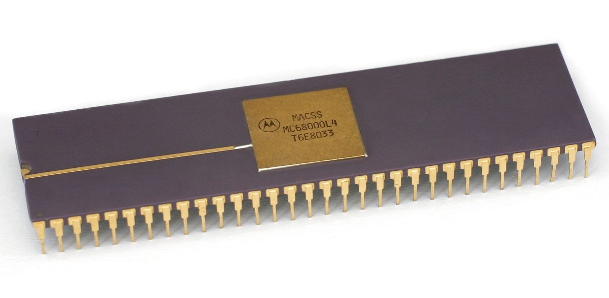
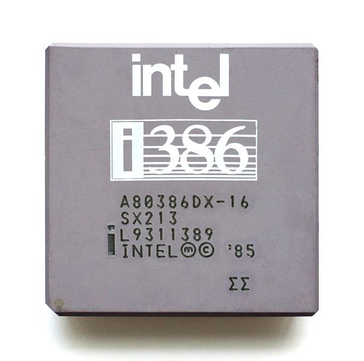

Intel 8086:
Los registros del procesador, se usaban para contener los datos con que se estaba trabajando puesto que el acceso a los registros era mucho más rápido que los accesos a la memoria. Se podian realizar operaciones aritméticas y lógicas, comparaciones, entre otras. Los modos del 8086 eran indirectos por registro, indexados o directos por registro.
Motorola 68000:
El mismo direccionamiento llevaba implícito el tipo de registro sobre el que trabajaba (direcciones o datos). Estuvo basado en dos bancos de 8 registros de 32 bits. Un banco es de datos (Dn) y el otro de punteros (An). Además contenía un contador de programa de 32 bits y un registro de estado de 16 bits.
Intel 80386:
Para este microprocesador existió un modo nuevo que requería un byte adicional denominado SIB (escala, índice, base) que se añadía al byte de operandos, es útil para direccionar elementos de vectores de longitudes diferentes en bucles. Era una alternativa a los modos autoindexados que esta máquina no soportaba.
